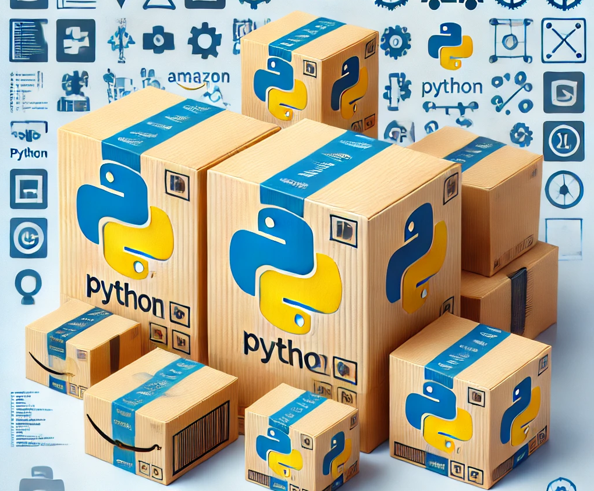
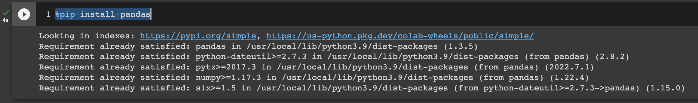
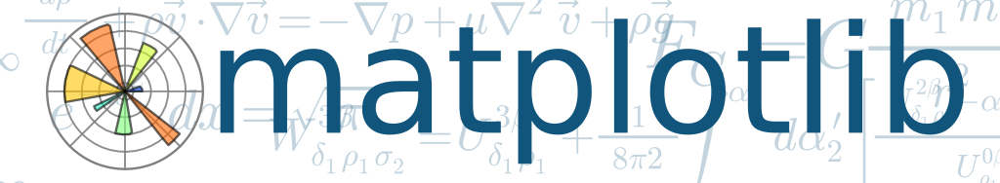
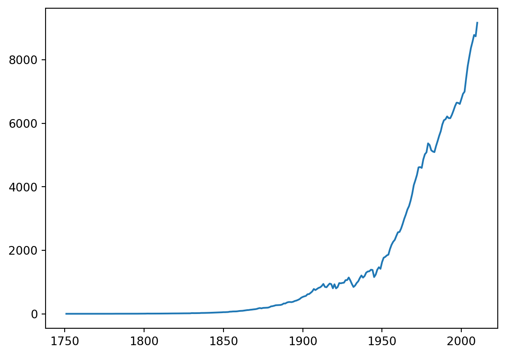
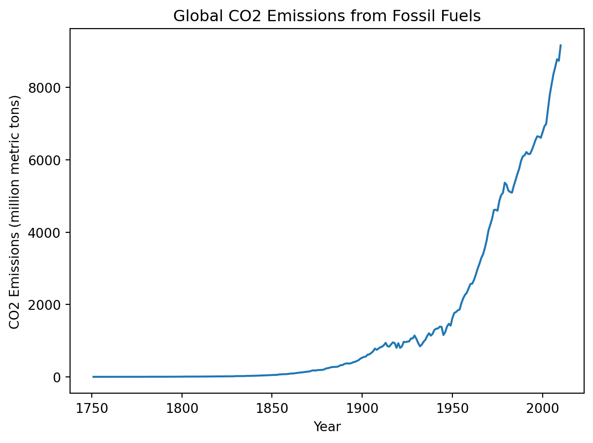
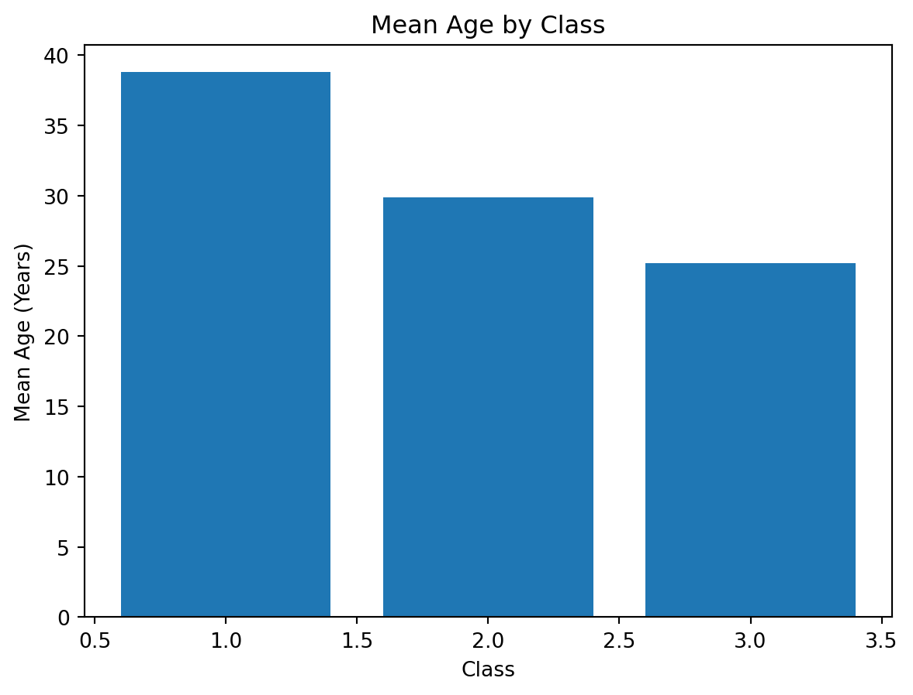
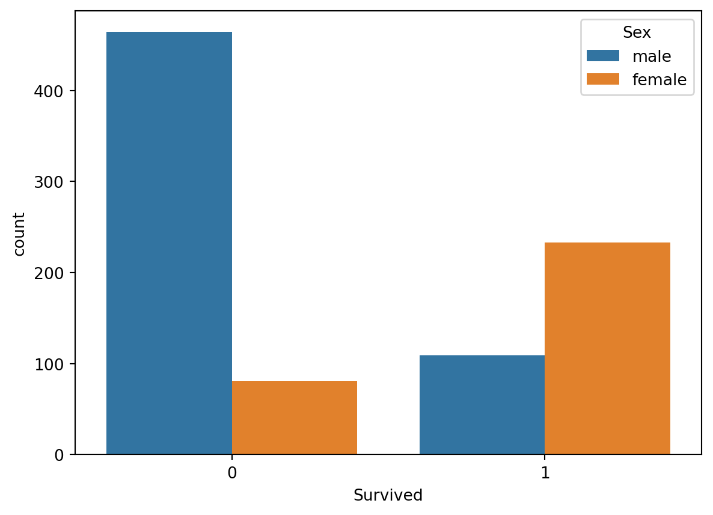
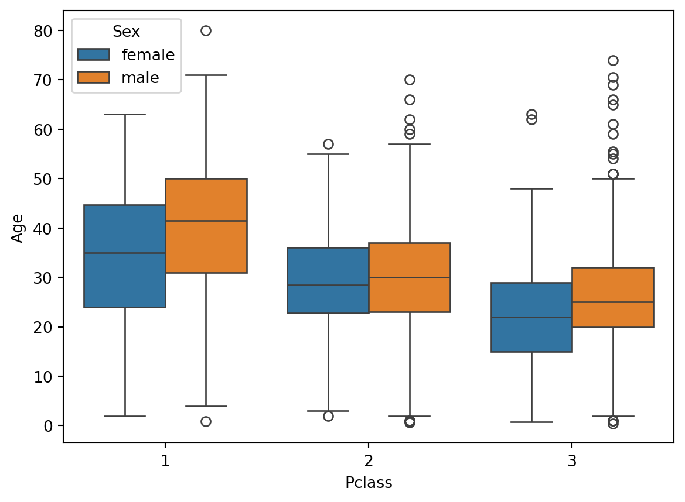
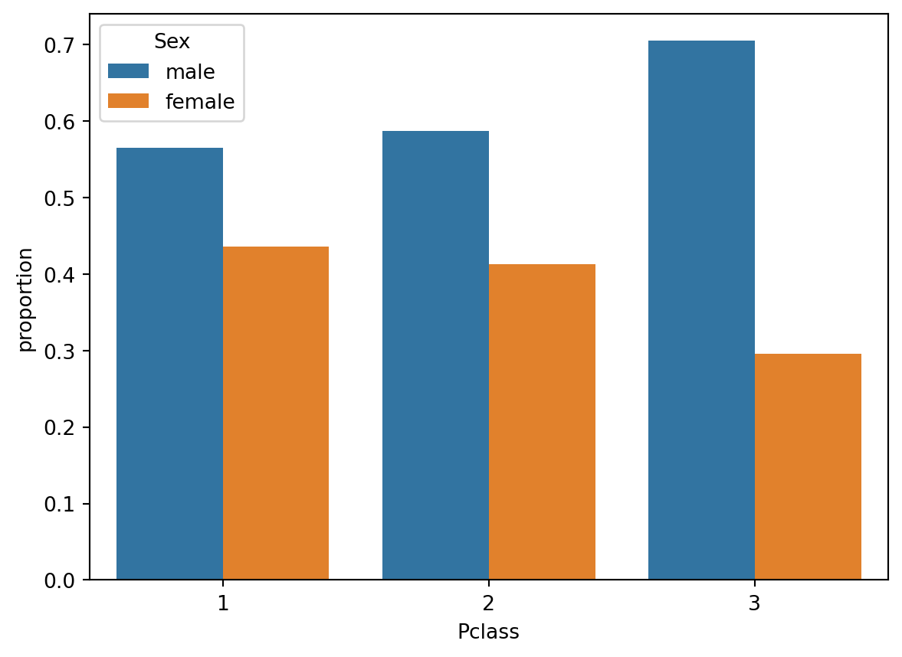

import math
math.sqrt(25)5.0We will be discussing key Python packages that are commonly used for data analysis such as pandas, matplotlib, seaborn, and numpy.

import statement followed by the name of the package.math package:import math
math.sqrt(25)5.0as keyword.math package with the alias m, we would use the following statement:import math as m
m.sqrt(25)5.0%pip install package_namepandas:%pip install pandas Notes:
pip stands for ‘Pip Installs Packages,’ a recursive acronym.pip is a command-line tool (not a Python statement) typically run in the shell on macOS or Linux or in PowerShell on Windows. However, it can also be run within Jupyter notebooks using magic commands, specifically by prefixing it with %.PandasPandas is a Python package that is used for data manipulation and analysis.

import pandas as pd
url = 'https://web.stanford.edu/class/archive/cs/cs109/cs109.1166/stuff/titanic.csv'
titanic = pd.read_csv(url) # Load Titanic dataset
titanic.shape # The dimension of the dataframe (the table)(887, 8)DataFrameOnce we have loaded data into a DataFrame, we can start exploring it using various Pandas functions.
The head() and tail functions are useful functions for quickly viewing the first and last few rows of a DataFrame.
head() for the top records in the DataFrame:titanic.head() # Print the first few rows of the DataFrame| Survived | Pclass | Name | Sex | Age | Siblings/Spouses Aboard | Parents/Children Aboard | Fare | |
|---|---|---|---|---|---|---|---|---|
| 0 | 0 | 3 | Mr. Owen Harris Braund | male | 22.0 | 1 | 0 | 7.2500 |
| 1 | 1 | 1 | Mrs. John Bradley (Florence Briggs Thayer) Cum... | female | 38.0 | 1 | 0 | 71.2833 |
| 2 | 1 | 3 | Miss. Laina Heikkinen | female | 26.0 | 0 | 0 | 7.9250 |
| 3 | 1 | 1 | Mrs. Jacques Heath (Lily May Peel) Futrelle | female | 35.0 | 1 | 0 | 53.1000 |
| 4 | 0 | 3 | Mr. William Henry Allen | male | 35.0 | 0 | 0 | 8.0500 |
tail() for the bottom records in the DataFrame:titanic.tail() # Print the last few rows of the DataFrame| Survived | Pclass | Name | Sex | Age | Siblings/Spouses Aboard | Parents/Children Aboard | Fare | |
|---|---|---|---|---|---|---|---|---|
| 882 | 0 | 2 | Rev. Juozas Montvila | male | 27.0 | 0 | 0 | 13.00 |
| 883 | 1 | 1 | Miss. Margaret Edith Graham | female | 19.0 | 0 | 0 | 30.00 |
| 884 | 0 | 3 | Miss. Catherine Helen Johnston | female | 7.0 | 1 | 2 | 23.45 |
| 885 | 1 | 1 | Mr. Karl Howell Behr | male | 26.0 | 0 | 0 | 30.00 |
| 886 | 0 | 3 | Mr. Patrick Dooley | male | 32.0 | 0 | 0 | 7.75 |
We can use Pandas to calculate basic statistics on our data, such as mean, median, and standard deviation.
The describe() function provides a summary of the basic statistics of each column in the DataFrame.
titanic.describe()| Survived | Pclass | Age | Siblings/Spouses Aboard | Parents/Children Aboard | Fare | |
|---|---|---|---|---|---|---|
| count | 887.000000 | 887.000000 | 887.000000 | 887.000000 | 887.000000 | 887.00000 |
| mean | 0.385569 | 2.305524 | 29.471443 | 0.525366 | 0.383315 | 32.30542 |
| std | 0.487004 | 0.836662 | 14.121908 | 1.104669 | 0.807466 | 49.78204 |
| min | 0.000000 | 1.000000 | 0.420000 | 0.000000 | 0.000000 | 0.00000 |
| 25% | 0.000000 | 2.000000 | 20.250000 | 0.000000 | 0.000000 | 7.92500 |
| 50% | 0.000000 | 3.000000 | 28.000000 | 0.000000 | 0.000000 | 14.45420 |
| 75% | 1.000000 | 3.000000 | 38.000000 | 1.000000 | 0.000000 | 31.13750 |
| max | 1.000000 | 3.000000 | 80.000000 | 8.000000 | 6.000000 | 512.32920 |
DataFrame.iloc[] function is used for integer-based indexing, where we can specify the row and column numbers.titanic.iloc[2:5]| Survived | Pclass | Name | Sex | Age | Siblings/Spouses Aboard | Parents/Children Aboard | Fare | |
|---|---|---|---|---|---|---|---|---|
| 2 | 1 | 3 | Miss. Laina Heikkinen | female | 26.0 | 0 | 0 | 7.925 |
| 3 | 1 | 1 | Mrs. Jacques Heath (Lily May Peel) Futrelle | female | 35.0 | 1 | 0 | 53.100 |
| 4 | 0 | 3 | Mr. William Henry Allen | male | 35.0 | 0 | 0 | 8.050 |
loc[] function is used for label-based indexing, where we can specify the row and column labels.titanic.loc[2:5, ['Survived', 'Pclass']]| Survived | Pclass | |
|---|---|---|
| 2 | 1 | 3 |
| 3 | 1 | 1 |
| 4 | 0 | 3 |
| 5 | 0 | 3 |
.loc and .iloc in pandas DataFrame| Feature | .loc (Label-based) |
.iloc (Integer-based) |
|---|---|---|
| Primary Use | Access data by row and column labels (names) | Access data by row and column integer positions |
| Syntax | df.loc[row_label, column_label] |
df.iloc[row_position, column_position] |
| Row/Column Identification | Uses label names for rows and columns | Uses integer positions (like list indexing) |
| Indexing Type | Label-based (requires exact match for labels) | Integer-based (0-based index like Python lists) |
| Row Selection | df.loc['row_label'] |
df.iloc[row_position] |
| Column Selection | df.loc[:, 'column_label'] |
df.iloc[:, column_position] |
| Single Value Access | df.loc['row_label', 'column_label'] |
df.iloc[row_position, column_position] |
| Range Slicing | Inclusive of the endpoint (e.g., df.loc['A':'C'] includes both A and C) |
Exclusive of the endpoint (e.g., df.iloc[0:2] includes only positions 0 and 1) |
| Boolean Indexing | Works with Boolean masks for label-based filtering (e.g., df.loc[df['Age'] > 25]) |
Not typically used with Boolean masks, though possible |
We can use Boolean indexing to filter data in a DataFrame based on a certain condition.
For example, we can filter the Titanic dataset to only show passengers who survived:
# Filter Titanic dataset to only show passengers who survived
survivors = titanic[titanic['Survived'] == 1]
survivors.head()| Survived | Pclass | Name | Sex | Age | Siblings/Spouses Aboard | Parents/Children Aboard | Fare | |
|---|---|---|---|---|---|---|---|---|
| 1 | 1 | 1 | Mrs. John Bradley (Florence Briggs Thayer) Cum... | female | 38.0 | 1 | 0 | 71.2833 |
| 2 | 1 | 3 | Miss. Laina Heikkinen | female | 26.0 | 0 | 0 | 7.9250 |
| 3 | 1 | 1 | Mrs. Jacques Heath (Lily May Peel) Futrelle | female | 35.0 | 1 | 0 | 53.1000 |
| 8 | 1 | 3 | Mrs. Oscar W (Elisabeth Vilhelmina Berg) Johnson | female | 27.0 | 0 | 2 | 11.1333 |
| 9 | 1 | 2 | Mrs. Nicholas (Adele Achem) Nasser | female | 14.0 | 1 | 0 | 30.0708 |
sum(), mean(), or count(), revealing trends within categories.Pclass) to calculate the average age of passengers in each class.# Group Titanic dataset by ticket class and calculate the average age for each class
age_by_class = titanic.groupby('Pclass')['Age'].mean()
age_by_classPclass
1 38.788981
2 29.868641
3 25.188747
Name: Age, dtype: float64Here, Pclass() becomes the index in the resulting DataFrame. While this is useful for quick summaries, it can sometimes make further data manipulation less intuitive.
Why Use reset_index()?
reset_index() converts the index back into a regular column.DataFrame easier to read and more convenient for additional operations (e.g., merging with other DataFrame or plotting).So, let us apply reset_index() to make Pclass a standard column:
# Grouping, aggregation, and reset index
age_by_class = titanic.groupby('Pclass')['Age'].mean().reset_index()
age_by_class| Pclass | Age | |
|---|---|---|
| 0 | 1 | 38.788981 |
| 1 | 2 | 29.868641 |
| 2 | 3 | 25.188747 |
Pclass appears as a regular column, making it easier to interpret and manipulate.MatplotlibMatplotlib is a Python package used for creating data visualizations.
Matplotlib
Let us start with an example of how to use Matplotlib to create a simple line graph for global CO2 emissions from 1960 to 2014.
Here is the code to load the dataset:
import pandas as pd
url = 'https://raw.githubusercontent.com/datasets/co2-fossil-global/master/global.csv'
co2 = pd.read_csv(url)
co2.head()| Year | Total | Gas Fuel | Liquid Fuel | Solid Fuel | Cement | Gas Flaring | Per Capita | |
|---|---|---|---|---|---|---|---|---|
| 0 | 1751 | 3 | 0 | 0 | 3 | 0 | 0 | NaN |
| 1 | 1752 | 3 | 0 | 0 | 3 | 0 | 0 | NaN |
| 2 | 1753 | 3 | 0 | 0 | 3 | 0 | 0 | NaN |
| 3 | 1754 | 3 | 0 | 0 | 3 | 0 | 0 | NaN |
| 4 | 1755 | 3 | 0 | 0 | 3 | 0 | 0 | NaN |
matplotlib:import matplotlib.pyplot as plt
plt.plot(co2['Year'], co2['Total'])
import matplotlib.pyplot as plt
plt.plot(co2['Year'], co2['Total'])
plt.xlabel('Year')
plt.ylabel('CO2 Emissions (million metric tons)')
plt.title('Global CO2 Emissions from Fossil Fuels')
plt.show()
MatplotlibMatplotlib to create a bar plot.plt.bar(age_by_class['Pclass'], age_by_class['Age'])
plt.title('Mean Age by Class')
plt.xlabel('Class')
plt.ylabel('Mean Age (Years)')
plt.show()
SeabornSeaborn is a Python data visualization package based on Matplotlib.Seaborn works well with pandas dataframes and provides tools for visualizing relationships between variables.import seaborn as sns
sns.countplot (data = titanic, x = 'Survived', hue = 'Sex')
sns.boxplot (data = titanic, x = 'Pclass', y = "Age", hue = 'Sex')
normalized_counts = titanic[['Pclass', 'Sex']].groupby(['Pclass']).value_counts(normalize=True).reset_index()
normalized_counts.head()| Pclass | Sex | proportion | |
|---|---|---|---|
| 0 | 1 | male | 0.564815 |
| 1 | 1 | female | 0.435185 |
| 2 | 2 | male | 0.586957 |
| 3 | 2 | female | 0.413043 |
| 4 | 3 | male | 0.704312 |
sns.barplot (data = normalized_counts, x = 'Pclass', y = "proportion", hue = 'Sex')
NumpyNumPy is a Python package used for numerical computing.NumPy is used in many scientific computing applications.
NumPy ArrayNumPy array, we can use the numpy.array() function.NumPy array:import numpy as np
data = [1, 2, 3, 4, 5]
arr = np.array(data)
arrarray([1, 2, 3, 4, 5])NumPy Array OperationsNumPy arrays.import numpy as np
arr1 = np.array([1, 2, 3])
arr2 = np.array([4, 5, 6])
arr3 = arr1 + arr2
arr3array([5, 7, 9])NumPy Array Indexing and SlicingNumPy arrays.NumPy array and slice it:import numpy as np
arr = np.array([1, 2, 3, 4, 5])
arr[2]np.int64(3)arr[1:4]array([2, 3, 4])NumPy BroadcastingNumPy feature that allows us to perform operations on arrays of different shapes.import numpy as np
# Create a 2D array of shape (3, 4)
arr1 = np.array([[1, 2, 3, 4],
[5, 6, 7, 8],
[9, 10, 11, 12]])
# Create a 1D array of shape (4,)
arr2 = np.array([2, 2, 2, 2])
# Add the 1D array to each row of the 2D array using broadcasting
result = arr1 + arr2
print(result)[[ 3 4 5 6]
[ 7 8 9 10]
[11 12 13 14]]In this example, we have a 2D NumPy array arr1 with shape (3, 4) and a 1D NumPy array arr2 with shape (4, ). We want to add the values in arr2 to each row of arr1.
Normally, this operation would not be possible because the two arrays have different shapes.
However, NumPy broadcasting allows us to perform this operation by “stretching” or “broadcasting” the 1D array to match the shape of the 2D array.
In this case, NumPy broadcasts the 1D array arr2 to a 2D array of shape (3, 4) by duplicating its values along the first dimension. This allows us to perform element-wise addition between the two arrays.